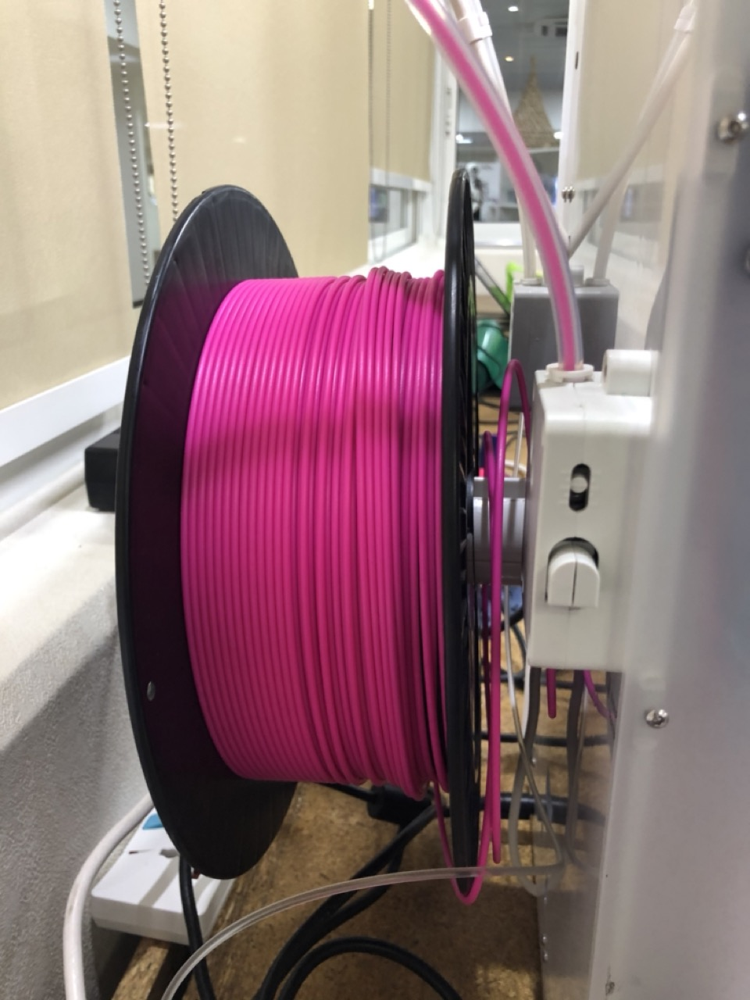
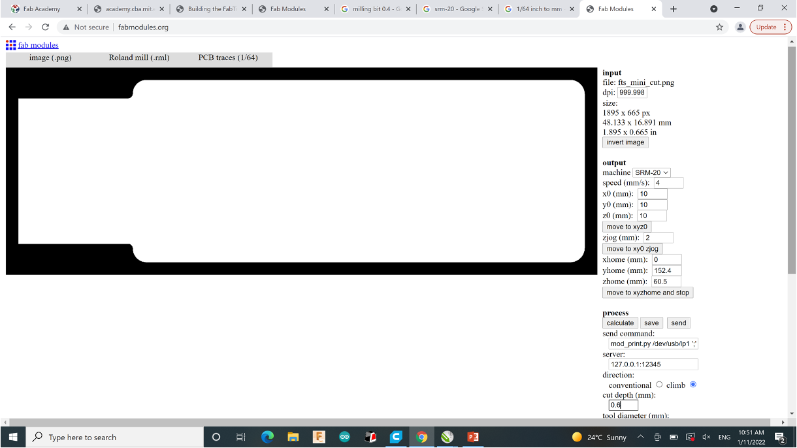
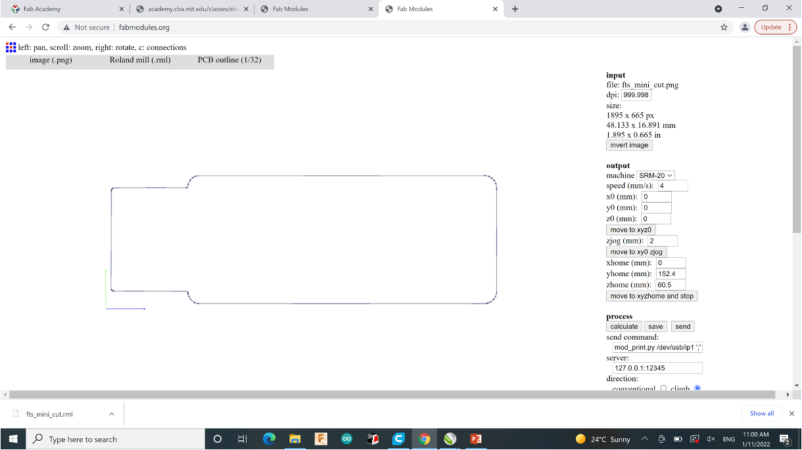
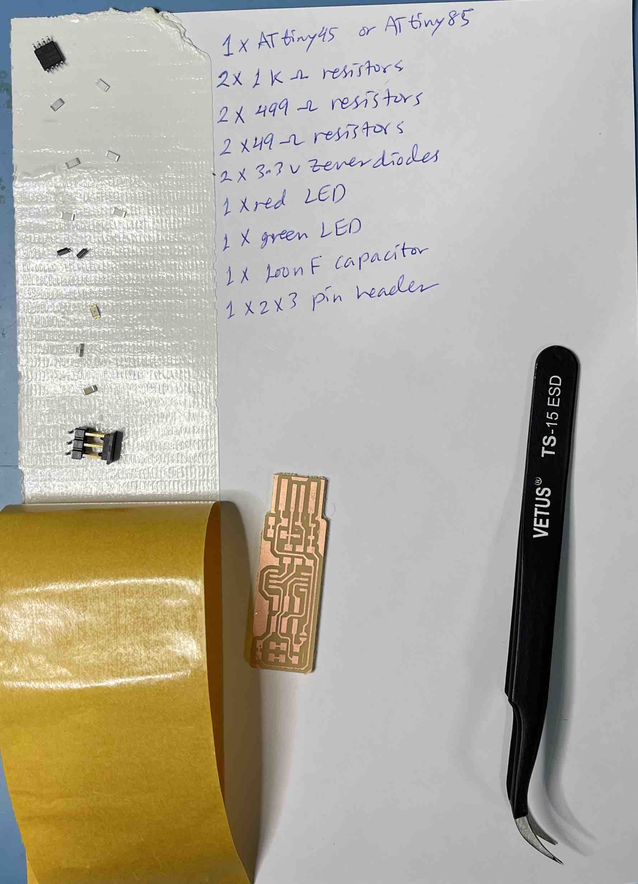

1) Laser cutting workshop
Using the CorelDRAW software to create my design to be produce. I inspired my design from sheikh Zayed poem. This is the created initial design: Setup used before cutting the part; right click on picture and select detailed logo; then select image and delete the white background.Also, the last thing of the setup to check is color the outer lines in red which means to be cutted, and black color for engraving which will be for the image.
Setup used before cutting the part; right click on picture and select detailed logo; then select image and delete the white background.Also, the last thing of the setup to check is color the outer lines in red which means to be cutted, and black color for engraving which will be for the image.  I used a diffrenet image and then used the laser cutting machine to produce the part (using MDF wood sheet) auto setting in the software. The final cutted part is shown in this picture:
I used a diffrenet image and then used the laser cutting machine to produce the part (using MDF wood sheet) auto setting in the software. The final cutted part is shown in this picture: Finally, this is a video.
Finally, this is a video.
Group assignment:
Test the cutting settings (Power, Speed and Kerf) for one material (each student pick one material such as Acrylic, Wood, MDF cardboard and so on).2) 3D printing workshop
Learned how to load the material filement into the printer.Also, I learned how to make the manual callibration for the built plate. Calibrating the built plate of the FDM utlimaker printer. Manually, by placing an A4 paper and use the bolts which underneath and holds the built plate to raise or lower the plate, to make sure it is 1mm gap between nozzle and build plate.
Group assignment: test the design rules for your 3D printer
Testing the design rules on the Ultimaker printer. I choosed the surface finish model as a test which can be printed without using support material.
Finally, this is the surface finish model file stl. Here is a picture of the model while it's being printed:

3) Fusion 360 workshop
4) PCB fabrication workshop
ReferenceUsing the PCB pictures from the reference above to create process file .rml
{kind=link}
4.1) PCB Design and preparing
Using the Fabmodules to convert image to G-code for the milling process.Steps:
**Traces**
**Outline**
 4.2) PCB fabrication
Used machine: monoFabUsed software: VPanel
Process: Milling
Mill bit used: 1/64 for traces; 1/32 for outline
**Workplace**
**Setup - Leveling**

**Milled PCB traces**

**Attach and Replace Mill bit**

4.3) PCB Assembly
**Components**
2x 1kΩ resistors
2x 499Ω resistors
2x 49Ω resistors
2x 3.3v zener diodes
1x red LED
1x green LED
1x 100nF capacitor
1x 2x3 pin header

**Soldering area**

{kind=link}
**PCB board**